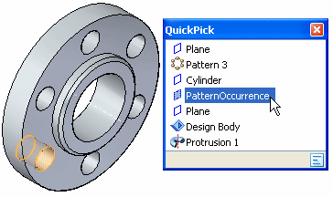
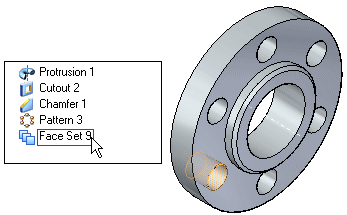

Modifying features which are part of a feature set
As the design for a model evolves, it may be necessary to individually edit a feature that is part of a feature set. For example, you may need to modify the diameter of one hole in a set of holes that originally had the same feature parameters, such as diameter, depth, and so forth. You can use the Separate and Break commands to isolate one or more features that were part of a larger set.
In a synchronous model, the Hole, Rectangular Pattern, Circular Pattern, and Pattern Along Curve commands create sets of features.
Feature sets
When you construct several holes in one feature operation, they are displayed in PathFinder as a set, with the individual instances of the set nested beneath the set entry. When you highlight or select the feature set entry in PathFinder, the entire feature set is highlighted or selected.

When you highlight or select one of the feature instances within the set, the feature instance is highlighted or selected. Because they are part of a set, if you edit the parameters for one of the holes in the set, all the members of the set are modified.
Separating features from a set
You can use the Separate command on the shortcut menu to isolate one or more holes in a larger set of holes so you can edit its parameters separately. The Separate command does not destroy the built-in intelligence of the hole feature.
When you separate a hole from a hole set, a separate entry is added to PathFinder for the separated hole, and you can edit its parameters without impacting the remaining members of the set. For example, you can change the size or type of the hole.
Breaking features from a set
The Break command is available for both individual pattern instances and hole instances. Pattern members are displayed in PathFinder differently than hole sets. Only one entry is displayed in PathFinder for a pattern, which includes all the instances of the pattern. To select individual instances of a pattern, you must use QuickPick.

You can then use the Break command on the shortcut menu to break the selection from the larger set so you can edit it separately. When you use the Break command, the built-in intelligence for a hole is lost though. The selection is converted into a face set and a Face Set entry is added to PathFinder.
